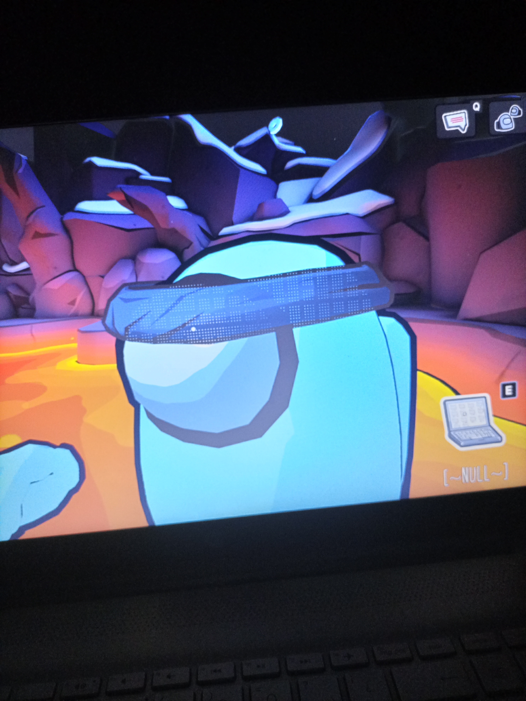
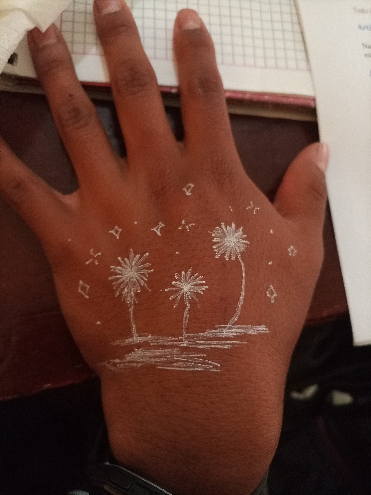
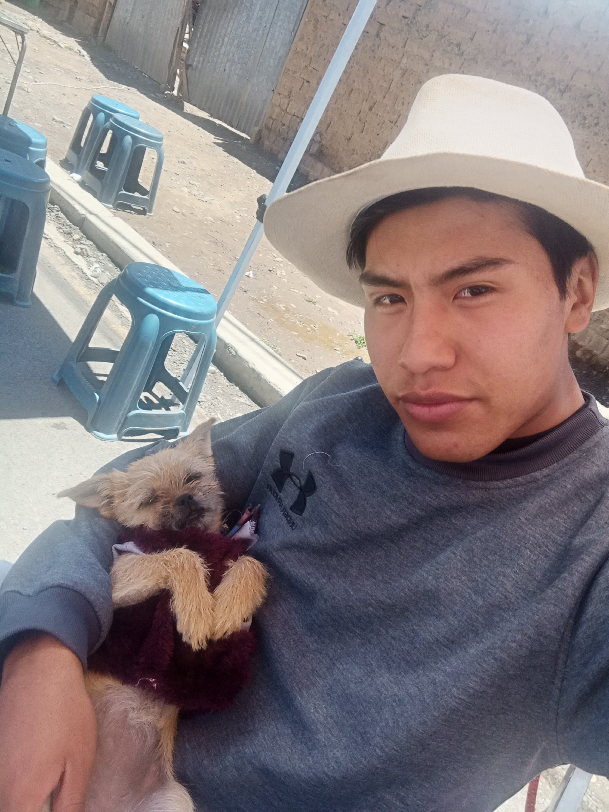
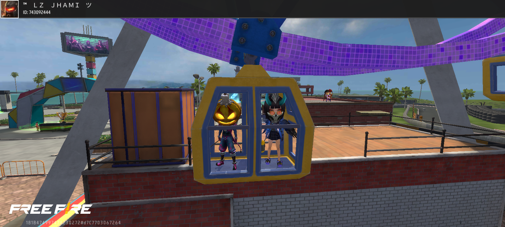
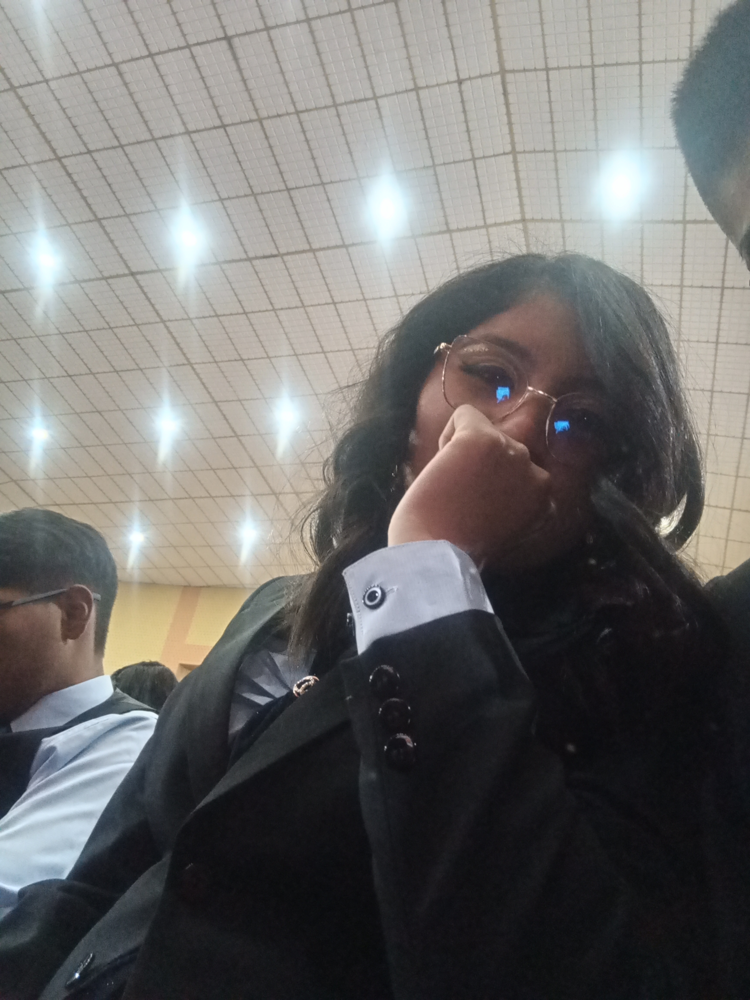
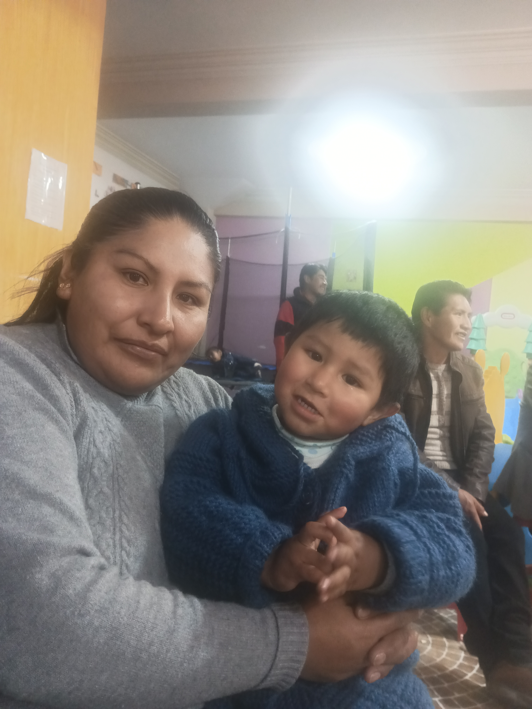
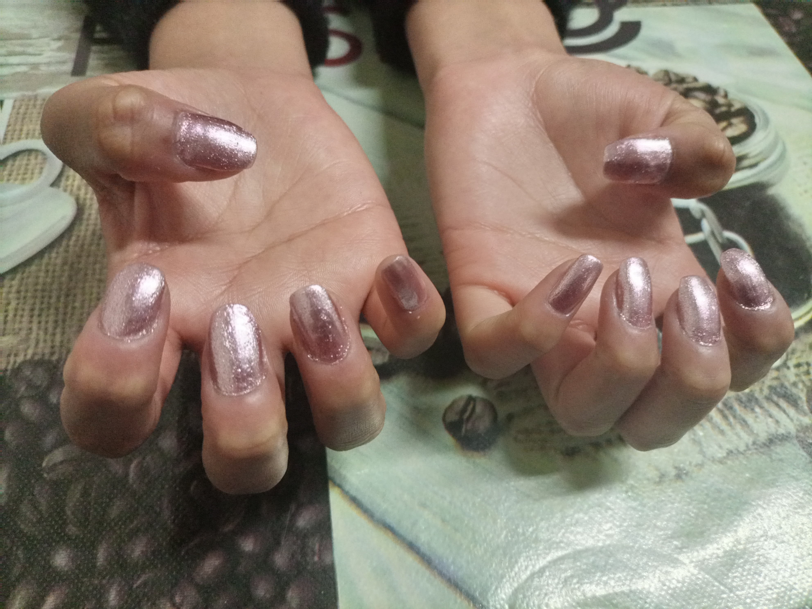
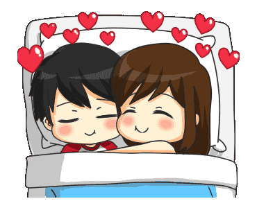

En mi memoria siempre estara esos momentos donde me diverti demasiado con tigo a mi lado esas noches
donde solo sabiamos jugar cualquier juego sin importar que fuera siempre encontrabas la forma de sonreir
y hacerme feliz siempre lo tendre presente por todo lo que hiciste por mi te lo agradezco mucho, perdon
siempre que me enojaba debo admitir soy muy competitivo pero en el fondo siempre me gusto jugar juegos
con tigo enserio gracias por toda la felicidad que me diste y por todos esos dias felices siempre te
quedre por haberme hecho tan feliz, aun recuerdo cuando jugabamos among us y una ves fuiste tu la que se
enojo con migo jsjjsajaj que tiempos aquellos eramos felices y lo sabiamos, cuanto desearia volver a lo
mismo por eso y mas esto siempre estara en mi memoria y tu en mi corazon

En mi memoria siempre estaras tu y con sigo tu arte todo lo que hacias realmente tenias un don con las
pinturas o todo lo referente a la decoracion y asi como olvidar cuando usaste mi mano como tu lienzo y
pintar algo tan siemple talves pero al mismo tiempo tan hermoso a mis ojos, dato importante jsjsj creo
que me tube que lavar 3 veces mi mano para que salga jssj aun asi ahora desearia tenerlo como un
tatuaje, para recordarme que lo hizo la persona que mas amo.

Nunca olvidare los dias cuando estaba embobado por ti jsjsj que practicamente podria haber hecho lo que
sea por ti, y esta imagen es para mi la prueba de lo que digo por que aunque parezca poco realmente lo
hacia por no dejaba de pensar en ti en todo el dia al punto de hacer cualquier cosa y seguir pensando en
ti me reucerdo que este fondo lo hice para que todos vean que te amaba a ti pero mas que eso lo hacia
para que tu hagas algun dia algo, sinto que talves no expresaba el como queria que me quieras o talves
desirte que cosas me enamoran y bueno a final de cuentas siempre te quedre y recordare esto con
nostalgia, mi manera de mostrarte cariño nose si te gustaba la forma en la que te amaba pero siento que
podia haber hecho mas pero bueno asi di todo de mi por ti en un punto de la relacion no olvides que
siempre te quedre.

Y bueno como olvidarme de la cidy esa perrita que tanta felicidad nos trajo, me trajo y te trajo,
realmente nunca pense tanto en querer a una perro pulga jsjsj esos perros que yo decia que no servian y
al final me termine encariñando con una jeje, aun asi nunca me olvidare cuando me la mostraste la
primera ves, parecia que se hiba a romper tambien como olvidarme cuando me la traje y vivio con migo
unos dias, me da nostalgia ya no volver a verla pero se que algun dia la volvere a ver, espero que no he
olvide de mi como yo no me olvide de ella. gracias por volver a mostrarme que es el carño a una mascota
me hiciste recordar a mi roko el ya no esta aqui y ahora se que debemos valorar mucho a los perros pues
estan con nosotros menos tiempo del que creemos... gracias por eso cidy y tambien mile por que a final
de cuenta nunca la hubiera conocido de no ser por ti jajajja.

Tambien estara en mis memorias todas esas noches que jugamos juntos frefire y nunca olvidare que nos
conocimos mas al prinsipio gracias al free jsjsj aun recuerdo que para acercarme a ti les pedi a los
chicos del cole que jugaban con tigo free que me incluyeran para poder jugar con tigo y poder hablar,
tambien como pasabamos horas hablando en el free cuando era pandemia y como nos viciabamos juntos al
free jsjsj con tigo aprendi a jugar no por que sepas jugar o seas bueno sino para disfrutar la compañia
de ti cuando jugabamos agraddezco todos esos dias fueron los mejores como desearia volver a esos dias
donde nuestro mundo eramos nosotros y jugar free...

Esta foto estara en nuestras memorias we realmente me conmovio mucho cuando encontre esta foto y trajo
a mi mente todo lo que vivimos y justo eso fue lo que me impulso a hacerte este detalle para poder
recordar juntos en este dia todo lo que pasamos juntos o bueno eso era el plan aprovechando que estoy
haciendo esto hoy 21 de septiembre pues perdon enserio por no hablarte en todo el dia realmente esto
empeze a hacerlo desde el sabado 20 despues de que me mandaste tu mensaje de no tengo bateria hablamos
luego, al llegar a mi casa pensaba si desirte pa salir hoy pero al final no lo hice por que sabia que
hoy lo pasarias con tu ser querido y pues se me ilumino y pense, aplico lo que aprendi estos meses y le
hago algo unico jsjs una pagina en forma de carta, se que ya hay plantillas donde solo es poner letra y
genera una carta pero apuesto a que no viste una pagina como la que estoy haciendo pues le meti todo lo
que aprendi jsjs espero enserio te guste esta carta y hacerte feliz como cuando nos tomamos esta foto...

Jajajaj una foto to mal hecha, aun asi la llevare en mi memoria recordar esa fecha verte con traje o de
gala son una de las mejores vistas me traes loco con tu figura debo admitirlo pues mi locura no cambia
desde la primera ves que te vi en segundo hasta la ultima ves que te vi solo evoluciono pero nunca
morira ese aprecio y deseo que te tengo por que para mi lo eres todo no te hace falta nada y asi
recordare poder haberte visto en traje formal cusual gala etc. te vi en todas formas y en cada una de
ellas me gustaste mas ahora espero que la persona que tienes sepa apreciarlo al igual que yo por que se
que mas no podra o almenos que pasen 5 años y recien podre dudarlo por que realmente produces algo unico
en mi cuando te veo.

Acompañame a recordar esta historia un poco triste pero con final feliz... Cuando veo esta foto me
recuerdo como era cuando todo nos estaba yendo bien como nos queriamos a cada instante y para poder
estar juntos desidi entrar con tigo a ese instituto como hibamos y volviamos realmente era feliz pero de
pronto hice algo mal terminamos y al final termine yendo solo a ese instituto aun asi te seguia amando y
guadandote un lugar me recuerdo como me dolia volver a mi casa solo y fue por ese sentimiento que desidi
volver a intentar conquistarte al final lo logre nos dimos una oportunidad, me recuerdo estar tan feliz
y diciendo que esa ves lo hiba a hacer bien... aun pienso que con otra oportunidad lo haria mejor pero
bueno ahora eso solo estara en mi mente pues se me acabaron las oportunidades aun asi estamos aqui como
2 amigos muy cercanos jsjsj y yo aqui haciendote un regalo a las 11:30 de la noche a media hora de que
acabe el 21 sjsjs.

Por si te lo preguntas mi mamita esta bien, realmente te extraña mucho me reucerdo que hace unos dias
le hable de que volvimos a hablar como amigos y ubieras visto como se alegro volver a escuchar de ti
realmente te quiere mucho y pues si te lo preguntabas ella esta bien y tambien el Liam jsjsj ya tendra 2
añitos de aqui a 6 meses maso ese enano me dio una razon mas para ser feliz alegra mi dia el solo verlo
cuando esta aqui en mi casa y bueno al final dejaste un hueco en mi familia masomenos y sobre todo en mi
mami y yo que aunque no creas te sigue extrañando y yo tambien pero bueno la vida continua y tu ya eres
feliz y debemos de estar felices por ti.

Por ultimo pero no menos importante la ves que te acompañe a hacerte las uñas realmente me sentia como
tu esposo acompañandote a esos lugares y era bien gracioso al igual que esa ves me recuerdo a cada uno
de los lugares donde te acompañe las salidas mas XD que tenia pero lo hacia por ti pues no era el lugar
sino la compañia tu lo volvias lindo cada salida ahora como desearia volver a salir asi con tigo pero
bueno nose, como dise el tema me enseñaste de todo menos a estar sin ti, me la paso viviendo en un
recuerdo y lo mas gracioso esq prefiero estar ahi que en la vida real pues tu eres y siempre seras mi
mundo.

Aprovechando este espacio quiero pedirte perdon tenia pensado regalarte este detalle el 21 de
septiembre osea hoy a las 8 pm maso pero realmente nunca pense que me iba a tardar tanto jsjsjs esta
bien complejo todo lo que hice literalmente estaba todo el dia tecleando y haciendo el codigo para esta
pagina web todo el diaaa sjsj pero lo vale por ti por que yo haria mucho mas por ti y por lo que vales
por mi ya son las 11:40 y si no me crees te muestro cap de pantalla junto con todo el codigo jsjsj
literal son una 300 lineas de codigo ahora me encuentro en la lina 280 de codigo, en resumen perdon esto lo veras el lunes cuando despiertes y espero sacarte una sonrisa :).